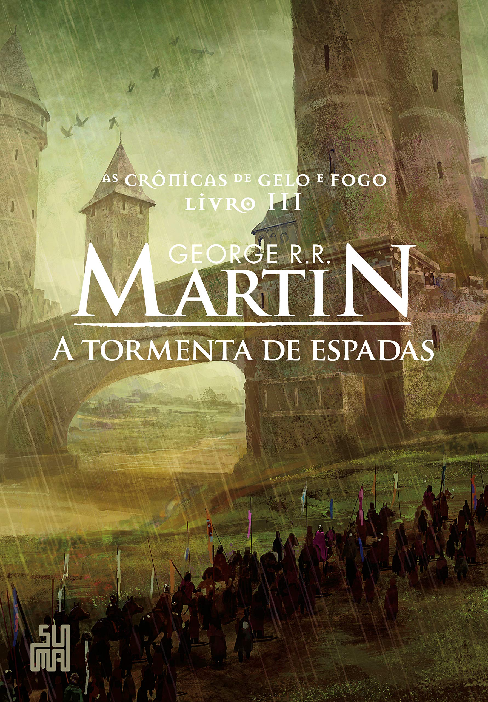
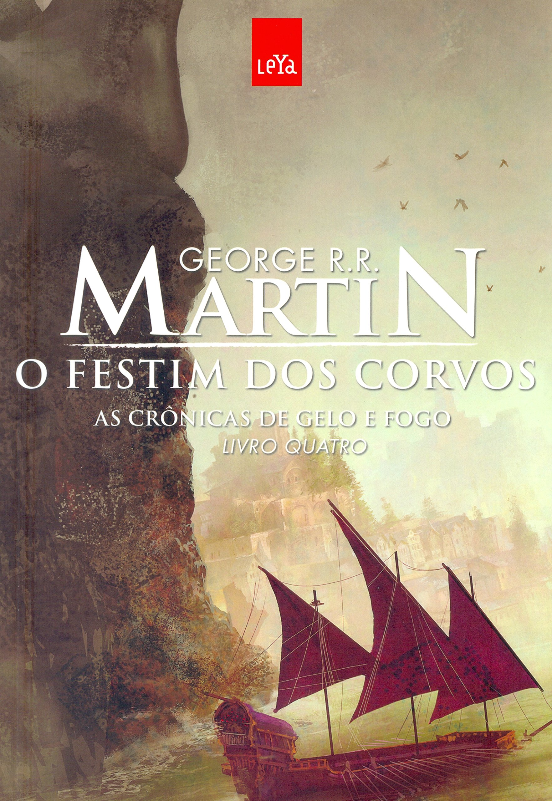
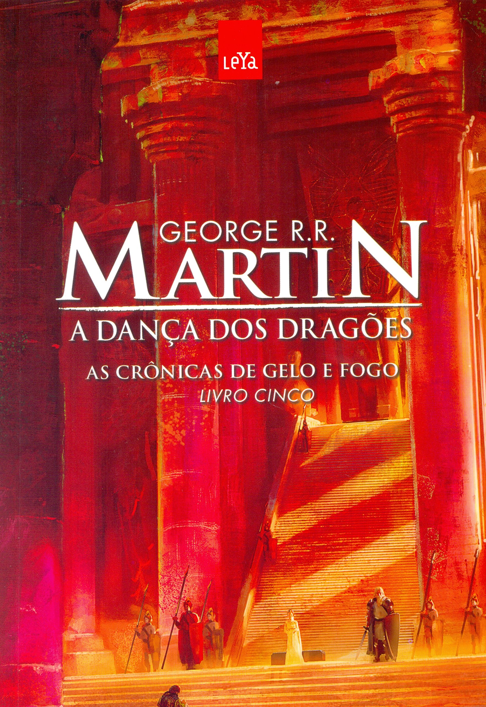
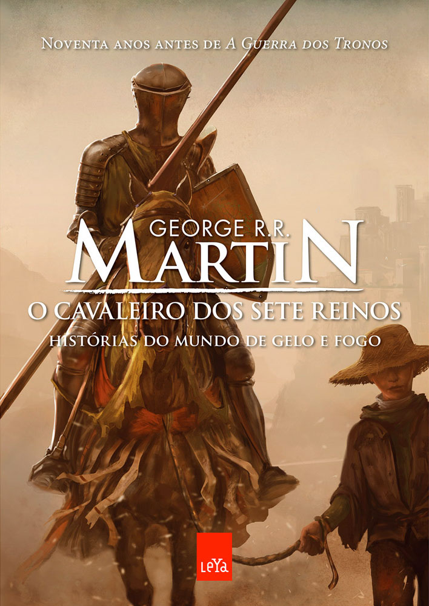
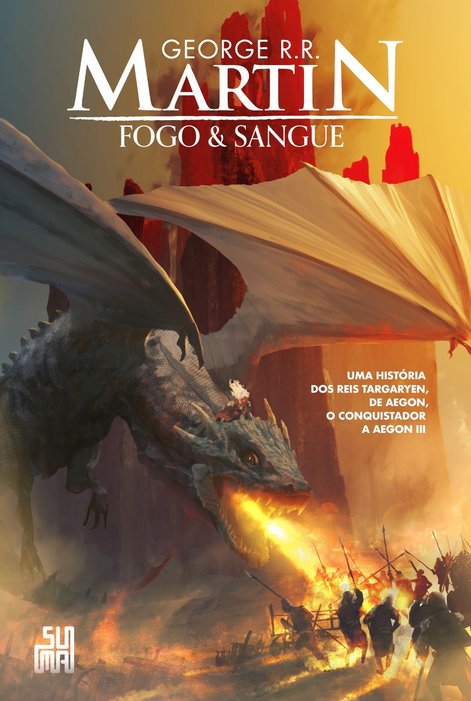
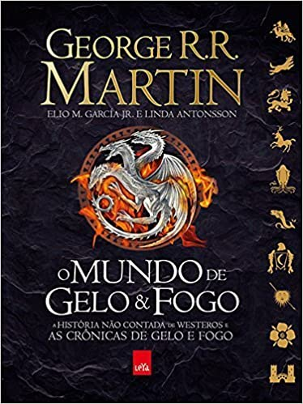

Este site é um pequeno agregador de conteúdo sobre o unverso das Crônicas de Gelo e Fogo criado por George R. R. Martin.
Portais
Livros
-

A Guerra dos Tronos
O verão pode durar décadas. O inverno, toda uma vida. E a guerra dos tronos começou. Como Guardião do Norte, lorde Eddard Stark não fica feliz quando o rei Robert o proclama a nova Mão do Rei. Sua honra o obriga a aceitar o cargo e deixar seu posto em Winterfell para rumar para a corte, onde os homens fazem o que lhes convém, não o que devem... e onde um inimigo morto é algo a ser admirado.
Compre aqui -

A Fúria dos Reis
Em A fúria dos reis, seis facções disputam o controle de uma terra dividida e o direito de ocupar o Trono de Ferro de Westeros – e estão dispostos a encarar tempestades, levantes e guerras para isso. Nesta história, irmão trama contra irmão e os mortos se levantam para caminhar pela noite. Aqui, uma princesa se disfarça de menino órfão, um cavaleiro se prepara para encarar uma pérfida feiticeira e bárbaros descem das Montanhas da Lua para saquear os campos.
Compre aqui -
 A Tormenta de Espadas
Dos cinco pretendentes ao trono, um está morto e outro caiu em desgraça, e ainda assim a guerra continua em toda sua fúria, enquanto alianças são feitas e desfeitas. Joffrey, da Casa Lannister, ocupa o Trono de Ferro, como o instável governante dos Sete Reinos, ao passo que seu rival mais amargo, lorde Stannis, jaz derrotado e enfeitiçado pelas promessas da Mulher Vermelha. O jovem Robb, da Casa Stark, ainda comanda o Norte, contudo, e planeja sua batalha contra os Lannister, mesmo que sua irmã seja refém deles em Porto Real. Enquanto isso, Daenerys Targaryen atravessa um continente deixando um rastro de sangue a caminho de Westeros, levando consigo os três únicos dragões existentes em todo o mundo.
Compre aqui -
 O Festim dos Corvos
Há séculos os sete grandes reinos de Westeros se enfrentam em amargas disputas, batalhas e traições. Agora, com Joffrey Baratheon e Robb Stark fora da jogada e lordes insignificantes competindo pelas Ilhas de Ferro, a guerra que devorou o continente parece ter finalmente chegado ao fim. No entanto, como após todo grande conflito, não demora para que os sobreviventes, os bandidos, os renegados e os carniceiros avancem para disputar o espólio dos mortos. Por toda Westeros os lordes se agitam, formando alianças e fazendo planos, enquanto nomes conhecidos e desconhecidos se apresentam para tomar parte das danças políticas.
Compre aqui -
 A Dança dos Dragões
Em todos os cantos conflitos ganham vida e traições vêm daqueles mais próximos. Guerreiros, selvagens, nobres e escravos – todos têm pela frente um longo inverno, enquanto destino, ambição e política ditam o ritmo da dança mais perigosa de todas.
Compre aqui -
 O Cavaleiro dos Sete Reinos
Duzentos anos após a Conquista, a dinastia Targaryen vive seu auge. Os Sete Reinos de Westeros atravessam um tempo de relativa paz, nos últimos anos do reinado do Bom Rei Daeron.É neste cenário que Dunk, um menino pobre da Baixada das Pulgas, tem uma chance única: deixar a vida miserável em Porto Real para se tornar escudeiro de um cavaleiro andante. Quando adulto, o cavaleiro morre e Dunk decide tomar seu lugar e fazer fama no torneio de Campina de Vaufreixo. É quando conhece Egg, um menino de dez anos, cabeça totalmente raspada, que é muito mais do que aparenta ser.
Compre aqui -
 Fogo & Sangue
Fogo & Sangue (no original em inglês: Fire & Blood; em Portugal: Sangue & Fogo) é uma história completa sobre a Casa Targaryen escrita por George R. R. Martin. Embora originalmente tenha planejado a publicação deste livro após a conclusão de As Crônicas de Gelo e Fogo, Martin revelou sua intenção de publicar a história em dois volumes após perceber que o manuscrito havia crescido muito. O primeiro volume, chamado Fogo & Sangue, foi lançado em 20 de novembro de 2018 nos EUA e no Brasil, pelas editoras Bantam e Suma respectivamente. Antes de levar o título de Fogo & Sangue, a história foi apelidada carinhosamente de GRRMarillion em homenagem ao Silmarillion de J. R. R. Tolkien. Em Portugal, o livro foi dividido em duas partes, semelhante a outros da série As Crônicas de Gelo e Fogo, lançado pela editora Saída de Emergência, sob os títulos Sangue & Fogo Parte I e Parte II.
Compre aqui -
 O Mundo de Gelo e Fogo
A saga dos personagens de Crônicas de Gelo e Fogo não começou com as disputas pelo trono de ferro. Este Guia inédito e ricamente ilustrado reúne um amplo material inédito que se estende desde a Era da Aurora até a Era do Heróis; a partir da vinda do primeiros homens até a chegada de Aegon, o Conquistador; da conquista de Aegon do Trono de Ferro até a Rebelião de Robert e da queda do Rei Louco, Aerys II Targaryen, o que tem causado as "atuais" lutas dos Starks, Lannisters, Baratheon e Targaryen.
Compre aqui